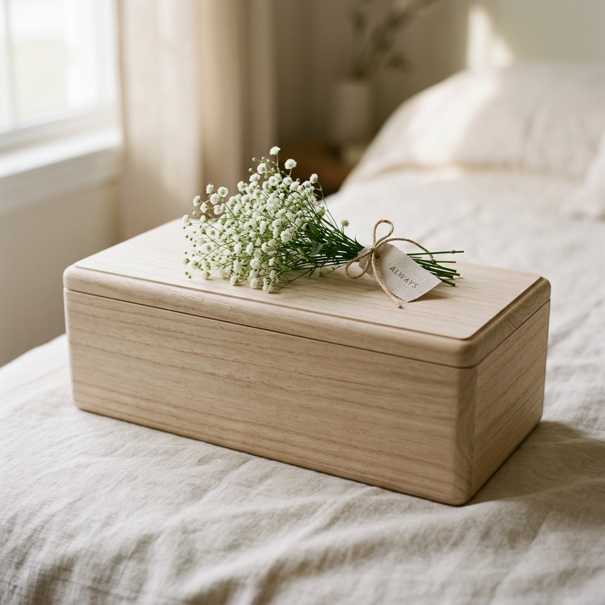
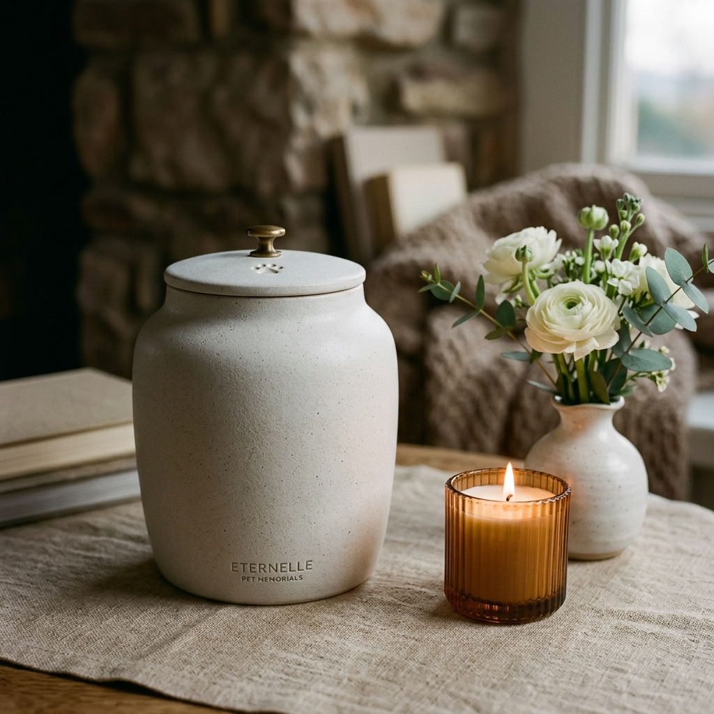

ONSIL FAREWELL GOODS
아름답고 고요한 배웅을 위해
먼 소풍을 떠나는 아이의 마지막이 외롭거나 춥지 않도록,
정성과 애정을 다해 고른 마지막 용품들을 안내해 드립니다.

1
Shroud
수의: 무지개다리를 건너는 길, 춥지 않게 안아주는 마지막 품
수의는 아이가 먼 길을 떠날 때 춥거나 외롭지 않도록 따뜻하게 감싸주는 의미를 지닙니다. 온실이 고심하여 선정한 삼베 및 유기농 순면 수의는 아이가 마지막까지 편안히 쉴 수 있도록 보호합니다.

2
Casket
관: 기나긴 소풍을 떠나기 전 편안하게 쉴 수 있는 아늑한 요람
관은 아이가 눈을 감고 무지개다리를 건너는 동안, 육신이 온전히 보호받으며 편안하게 쉴 수 있는 마지막 안식처입니다. 부드러운 쿠션 내피와 수작업으로 마감된 오동나무 목재로 정성스레 보호해 드립니다.

3
Urn
유골함: 영원히 내 곁에 머물게 하는 작고 따뜻한 새로운 집
화장 후 남은 아이의 유골을 모시는 유골함은, 형체는 변했을지라도 아이의 존재를 내 곁에 계속 머물게 하는 새로운 보금자리입니다. 이중 진공 세라믹 캡 기술로 습기와 외부 해충을 원천적으로 차단합니다.